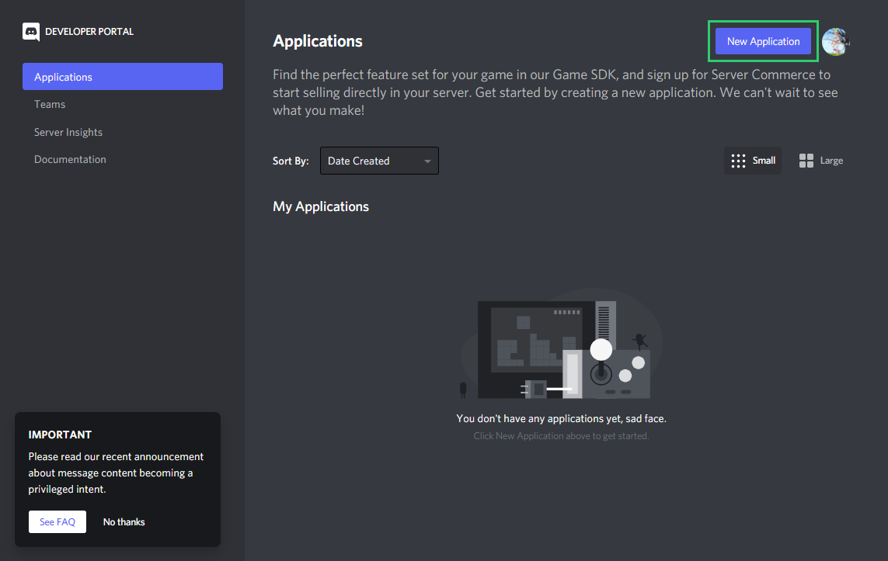
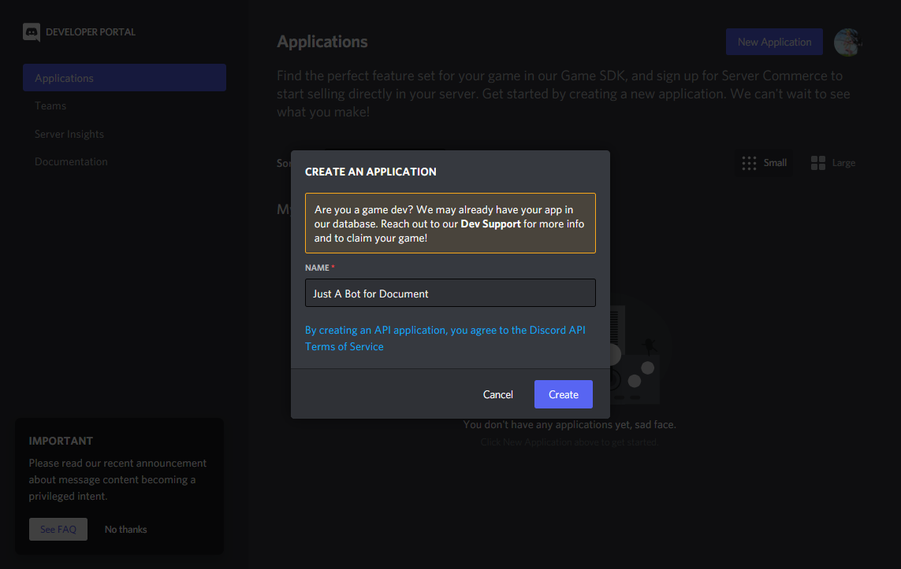
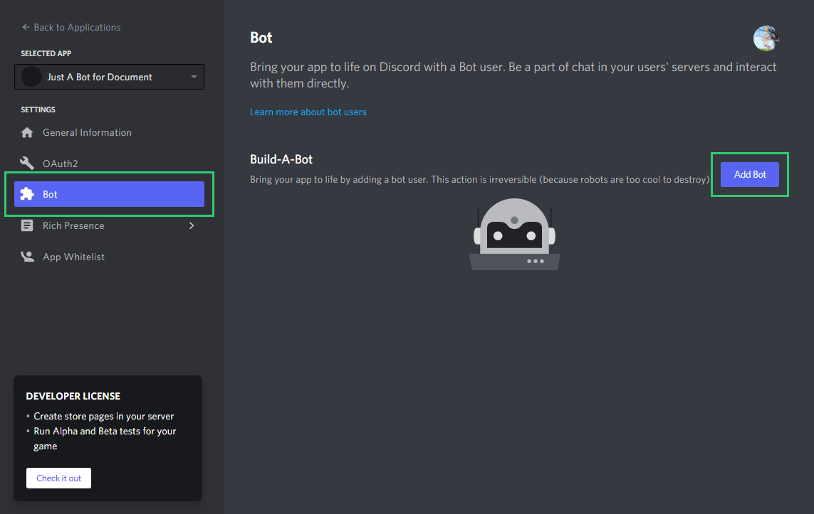
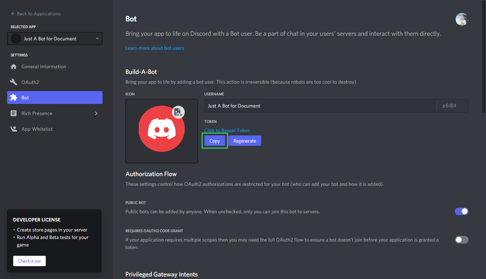
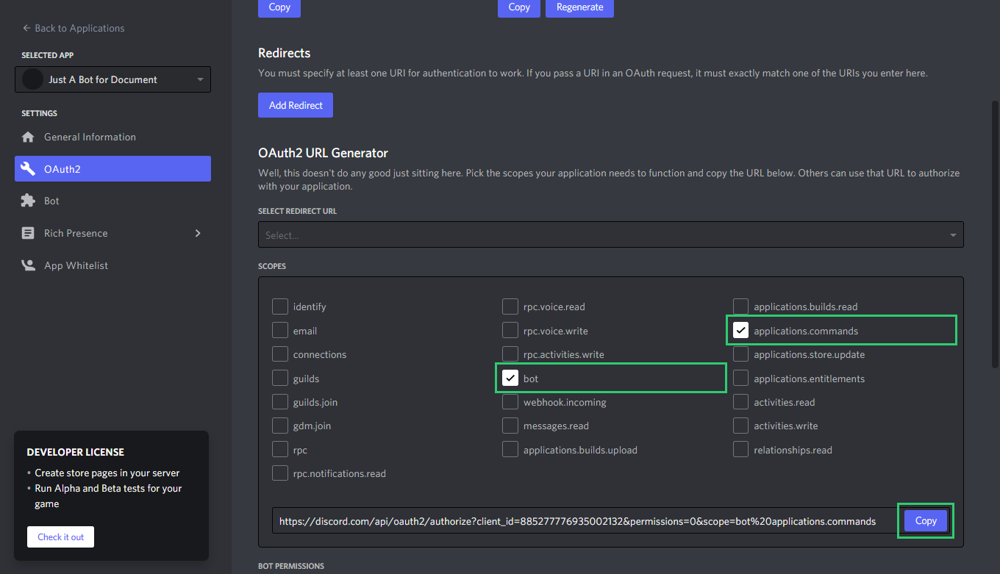
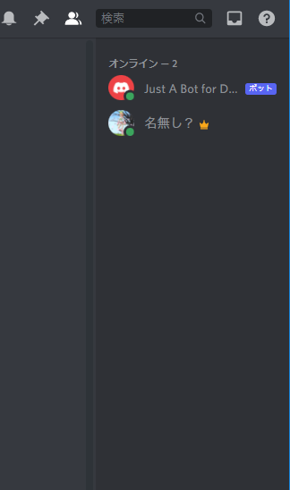
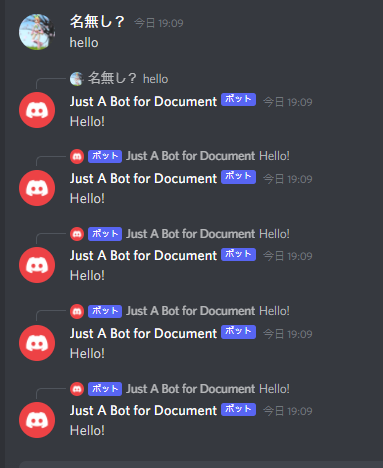
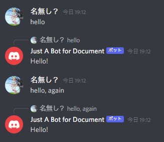

Tutorial
Welcome to discorb! This lib allows you to create a discord bot with Ruby. Let's get started!
Requirements
- Ruby 3.0.0+
- Basic knowledge of ruby
These documents will help you:
Recommended
Once you have all of these, you can start coding!
Start creating your bot
Create a Bot account
You must have a bot account to use this lib. First, go to Discord Developer Portal and click on New Application.

And then type a name for your bot, and click Create.

You will be redirected to the General Information page.
Then, click Bot and then Add Bot and then Yes, do it!.

You will see bot information, and click Copy button in TOKEN section.

DO NOT SHARE THIS TOKEN, OR YOUR BOT BAN EVERYONE IN EVERY SERVER! This is serious security risk.
Click Regenerate button to regenerate your token. Do this immediately when you accidentally share your token.
You did it! Now, you have a bot account.
Invite your bot to a server
Go to OAuth2 page and scroll down, and check bot and applications.commands permissions.

Then, click Copy button and paste it to your browser.
Choose a server you want to invite your bot to, and follow the instructions.
Code your bot
Install gems
Open terminal and type:
gem install bundler discorb
Setup files
Create a new directory and go to it. Open terminal and type:
discorb new
Specify --git if you want to use git.
You will get some files in your directory.
main.rb: The main file of your bot..env: The environment variables of your bot. You must keep this file secret!Gemfile: Gemfile for bundler.Gemfile.lock: Gemfile.lock for bundler.
You will get other files if you specify --git.
Learn more here.
Start your bot
Open main.rb, you will see the following code:
require "discorb"
require "dotenv"
Dotenv.load # Loads .env file
client = Discorb::Client.new # Create client for connecting to Discord
client.once :standby do
puts "Logged in as #{client.user}" # Prints username of logged in user
end
client.run ENV["TOKEN"] # Starts client
Open .env, you will see:
TOKEN=Y0urB0tT0k3nHer3.Th1sT0ken.W0ntWorkB3c4useItH4sM34n1ng
Replace Y0urB0tT0k3nHer3.Th1sT0ken.W0ntWorkB3c4useItH4sM34n1ng with your bot token.
Remember to keep this file secret!
Open terminal and type:
bundle exec ruby main.rb
# or
bundle exec discorb run main.rb
Yay! Your bot is online!

But your bot won't do anything.
So add your bot some greetings!
Ctrl + C to stop your bot.
Add a greeting
You can do some action on message by typing like this:
client.on :message do ||
# ...
end
message is a Discorb::Message object. It contains information about the message.
You can get the message content by Discorb::Message#content.
Add if statement, and reply to the message with Discorb::Message#reply.
client.on :message do ||
if .content.downcase.include? "hello"
.reply "Hello!"
end
end
Save your bot and restart it.
You can see your bot's response by typing hello in your server...

Oops! Your bot is responding to bot's messages, it's infinite!
Terminate your bot by typing Ctrl + C in terminal.
Ignore bot's messages
You can access author information by Discorb::Message#author, and it has Discorb::User#bot?.
So, you can ignore bot's messages by adding if statement:
client.on :message do ||
next if ..bot?
# ...
end
Note you must use next to exit the block.
Save your bot and start it.

You did it! Your bot won't respond to bot's messages anymore.
Finally
This is the end of tutorial.
To learn more, check out the documentation. You can also check out Examples.